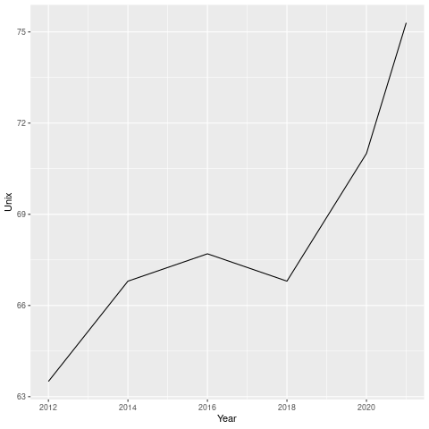

Table of Contents
1 Why Learn Unix
Unix, generally in the form of Linux, but also commonly encountered as the underlying idiom of OSX and other important systems, powers the world.
| Source | Month | Year | Unix | Windows |
|---|---|---|---|---|
| W3Techs | May | 2021 | 75.3 | 24.8 |
| W3Techs | Jan | 2020 | 71.0 | 29.0 |
| W3Techs | Jan | 2018 | 66.8 | 33.2 |
| W3Techs | Jan | 2016 | 67.7 | 32.3 |
| W3Techs | Jan | 2014 | 66.8 | 33.2 |
| W3Techs | Jan | 2012 | 63.5 | 36.5 |
library(tidyverse);
print(ggplot(servers, aes(Year, Unix)) + geom_line());
And the result:

Figure 1: Percentage of servers running unix like operating systems over time.
Some very popular data science software (RStudio Server, Jupyter/Labs) runs on Linux (even if you access them via a web browser on any platform).
This means that if you become a working data scientist or want to support yourself working with many data scientific tools as a researcher, some knowledge of Unix will be useful to you.
If that weren't enough, the true key to portable data science is Docker. It is true that you can run Docker in Windows but the configuration of docker containers requires a good working knowledge of the Unix idiom, since most containers are Linux based.
For this book, Linux based Docker Containers will be the norm. For Windows users I highly recommend using the instructions located here:
https://docs.docker.com/docker-for-windows/wsl/
to set up both Windows Subsystem for Linux (which will allow you to run a Linux environment natively on Windows) and setting up the appropriate Docker install on top of it.
Mac users can use the standard Docker install. Linux users will typically know what they want to do, but the short version is install Docker via the instructions appropriate to your distribution and make sure you are in the docker group.
Will will discuss Docker in greater detail in later chapters.
2 Introduction to Computers
If you were born after 1990 or so there is a good chance you've never seen a text-based shell. Modern computers of the most common variety (smartphones) do an even more aggressive (or successful, depending on your attitude and needs) job of protecting you from the underlying operating system. Thus it is worth a brief conceptual review:
A computer, even a smartphone, is a machine with a processor, which performs mathematical operations on data, memory, which is volatile storage (it will be erased in the event that the computer is turned off) which forms the short term memory of the machine, and non-volatile storage (disks, solid state memory, even, sometimes still, spinning rust) which is persistant data store which survives even when the machine is off.
At the most basic level, a computer reads data from a disk into local memory and its processor reads a program out of that memory, executing instructions which modify the data in memory and/or write it back to long term storage.
In the early days of computing this was the conceptual world the compute programmer inhabited as well: interacting with a computer was the process of telling it, in great detail, which memory to access, what to do with it, and how to store or output the results.
Since those days the trend has been towards even greater levels of abstraction. Now, a typical smartphone "protects" the user from most of these details: you never think explicitly, about the distinctions between storage and memory or about the details of how programs work.
3 Introduction to Unix Shells
We will now dive much deeper into the computer than you may have before. What may be surprising about this jump is just how much more water there is beneath us still: Unix Shells, while providing what must seem like shockingly low level access to the workings of a machine compared to modern graphical user interfaces, still afford us an almost entirely abstract representation of our computer, albiet one which has traded implicitness for explicitness to a great degree.
A shell (in this context) is a textual interface between you and the services provided by your operating system. From the shell we can do all the things we ordinarily do from a graphical user interface: inspect files, launch programs, organize data, poke and peek at various system resources and settings. We do these things by executing commands.
Before we dive into the details you might ask yourself: why would we want to have such low level access? It is true, these text-mode shells impose a substantial cognitive burden on the user, particularly at first. What do we purchase with that additional cognitive energy?
- control - the shell gives us enormous, fine grained, control over the resources the computer gives us.
- reproducibility - because all the actions we might undertake with the shell are represented as text, we can easily copy and paste them into a file and re-run them.
3.1 Control
The unix Shell is loosely organized under the banner of "The Unix Philosophy". Whereas graphical user interfaces tend to become monoliths from which it is difficult to escape, the Unix Philosophy suggests that tools (programs) should:
- do one thing
- do it well
This philosophy is enabled by a very simple organizational principal: almost everything in Unix is represented as a file. All programs operate on files, typically by reading an input file and producing an output file. More complex outcomes are acheived by stringing many small programs together, each operating on the output of the previous until a desired result occurs. Text based files are very commonly the inputs and outputs of these processes.
3.2 Reproducibility
Unix Shells are text based interfaces. While it can seem onerous, initially, to have to laborously type out each desired command to the shell, doing so is very traceable. After we understand what we want to do by interacting with a shell directly, we can copy and paste the commands we've concocted into a "shell script" and re-execute them. Repeatative tasks can be trialed a few times and then run over and over again and gradually refined.
When you combine this fact with tools like git, which make it easy to record the history of a file over time, you have system for ensuring that what you do is recorded for posterity and reproducible.
Graphical User Interfaces, in contrast, introduce many non-meaningful degrees of freedom (for instance, the precise x, y coordinate of a folder on your desktop) which make it difficult to automate workflows for them, even when such tools exist.
Learning to use the Shell will teach you a powerful way of simple and easily orchestrating work your computer does.
4 Shell Concepts
4.1 Many Shells
Unix supports many different shells which behave similarly. Throughout this course I will be assuming bash because it is the most common. I'll be trying to write bash code which will run in most other shells (most notably zsh, which is recently the default OSX shell) for simplicity. But if you run into an issue, make sure you are running bash by simply typing:
bash
4.2 REPL
The shell is one example of a "read, eval, print" loop. It
- reads an input (typically a line of text)
- evaluates it (turning it into an action or side effect or value of some sort)
- and then prints the result (or nothing, if a side effect)
At its most superficial level this is how we interact with a shell:
ls
Reading is trivial - the input you type is just a list of characters. Evaluation is where things get tricky:
4.3 Evaluation
A theme of this course is that all programming languages do more or less the same thing: they translate text into actions. If you develop a good mental model of that process then you understand the language.
Given the ubiquity of Bash, its evaluation model is surprisingly complicated. Luckily for us, we will be concerned with its simplest aspects.
Superficially and in the simplest case, bash does the following when you type a command:
- the text is split into tokens on the spaces
- the first token is assumed to be a command you want to execute. Bash tries to find a file which implements this command by looking it up on the "PATH" (of which more later).
- the subsequent tokens are passed to the command as "arguments". Arguments are additional pieces of information the command may want or need to change the way it executes.
So when we typed "ls" above, bash read this as us wanting to run the command "ls" which it found on our hard drive. Then it saw that we passed no arguments to the command, so it executed it without any.
4.3.1 Eg 1
ls -t -l
In the above example, the shell reads "ls -t -l", splits it apart on
the spaces like this: [ls, -t, -l] finds the ls command, and
passes the -t and -l arguments to it. Note that these arguments
are just passed as strings to the ls command. It is up to ls to
decide what, if anything, they mean. In this case, they mean "sort the
file list by modification time" (-t) and "print out more information
about the files" (-l)
4.3.2 Eg 2
#something_silly a b c
The above will generate an error like this:
bash: line 1: something_silly: command not found
4.4 The PATH and other environment variables
When a string is evaluated the shell must find what command we want to run. How does it do so?
Some background: apart from a few built in commands (the so-called
builtins) commands in shell scripts are just executable files stored
somewhere on the hard drive. The command which tells us where such
commands qua files are located:
which which
A good piece of jargon to have in your head here is that which
"resolves" to /usr/bin/which.
If you haven't seen unix style file locations, note:
- on a unix system every file lives beneath the so-called "root" of
the file system, called
/. - anything between two
/(called path separators) is a _directory. - the last term may be a directory or a file. In this case, it is the
executable file which implements the
whichcommands.
which resolves in the same way that Bash resolves, but how does that
work?
They look in something called an environment variable called PATH. You can see what an environment variable holds like this:
echo $PATH
Apparently, PATH contains a series of locations on the filesystem
separated by ":" characters. Bash searches this list in order to find
executables during command evaluation.
So in the case of which it looks in
/home/toups/.local/bin(no hit)/usr/local/local/sbin(no hit)/usr/bin(hit!)
By modifying this environment variable we can modify the way bash looks up commands. But how would we create our own command to test out this ability?
Let's create a directory
And then let's create a directory:
mkdir my-commands readlink -f my-commands
.
/home/toups/work/courses/bios611/lectures/02-unix/my-commands
(your file will obviously be somewhere else on your personal computer).
And now lets create the file
#!/bin/bash echo hello world
First we need to tell our Unix that we want to give the file "hello.sh" permission to act as an executable:
chmod u+x my-commands/hello.sh
And then we can
PATH="$(readlink -f my-commands):$PATH" hello.sh
.
hello world
If some of the above steps are a little confusing to you, that is ok - we're not going for a full understanding of working on the command line: we want just enough to get around.
We will develop more as we go.
The PATH isn't the only environment variable. What variables are defined will vary a lot by system and situation, but you can see a list of all of them by saying:
env | head
SHELL=/bin/bash SESSION_MANAGER=local/cscc-laptop:@/tmp/.ICE-unix/2031,unix/cscc-laptop:/tmp/.ICE-unix/2031 QT_ACCESSIBILITY=1 SNAP_REVISION=1161 XDG_CONFIG_DIRS=/etc/xdg/xdg-ubuntu-wayland:/etc/xdg XDG_SESSION_PATH=/org/freedesktop/DisplayManager/Session0 XDG_MENU_PREFIX=gnome- GNOME_DESKTOP_SESSION_ID=this-is-deprecated SNAP_REAL_HOME=/home/toups SNAP_USER_COMMON=/home/toups/snap/emacs/common